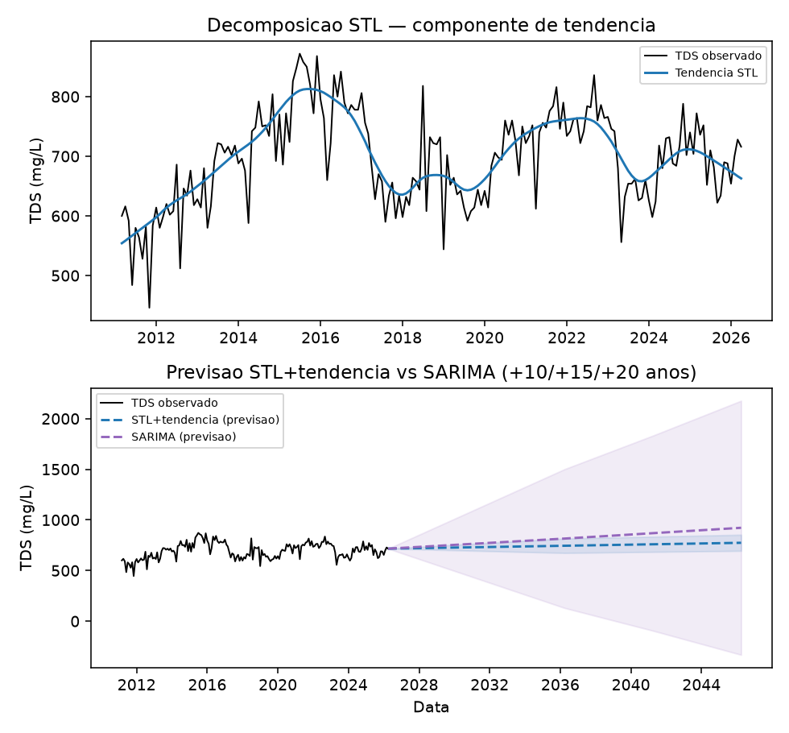
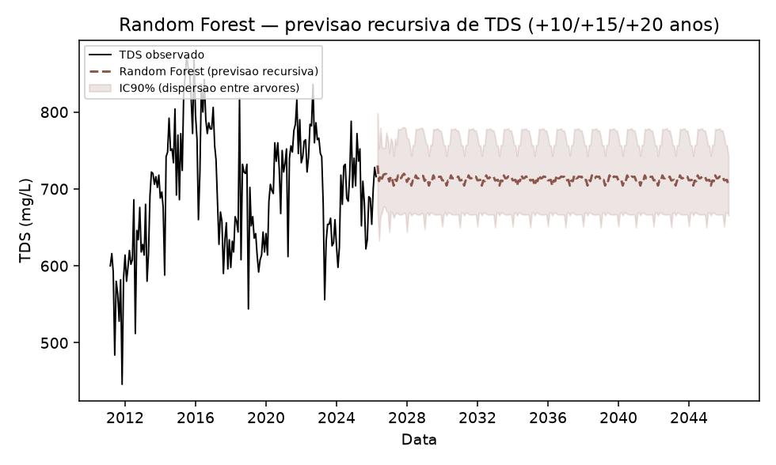
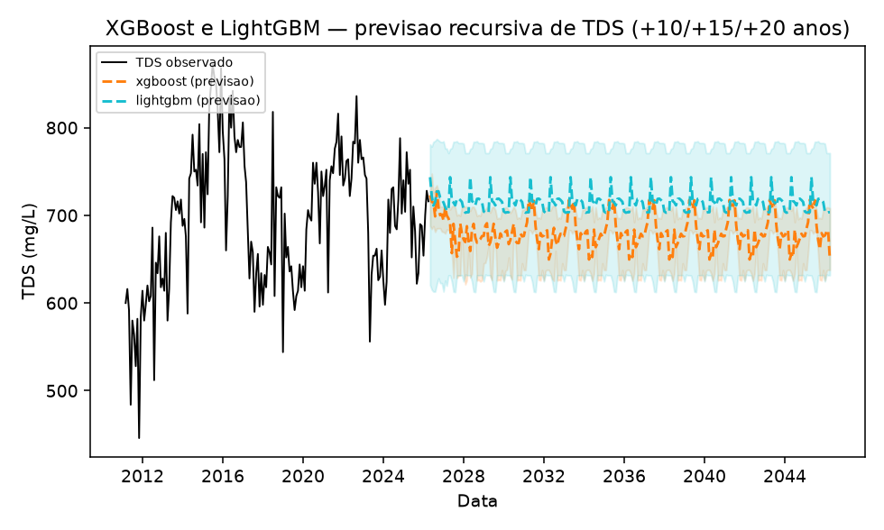
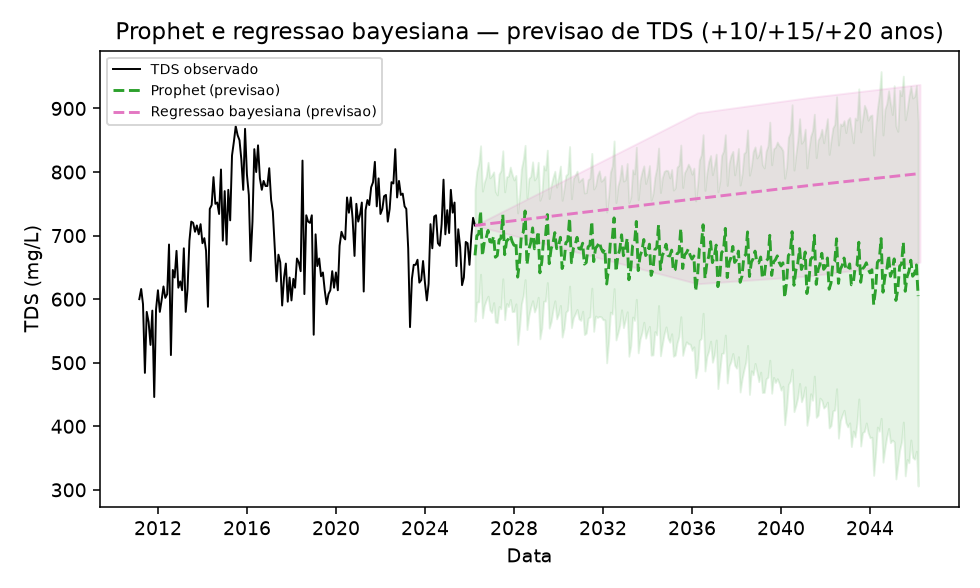
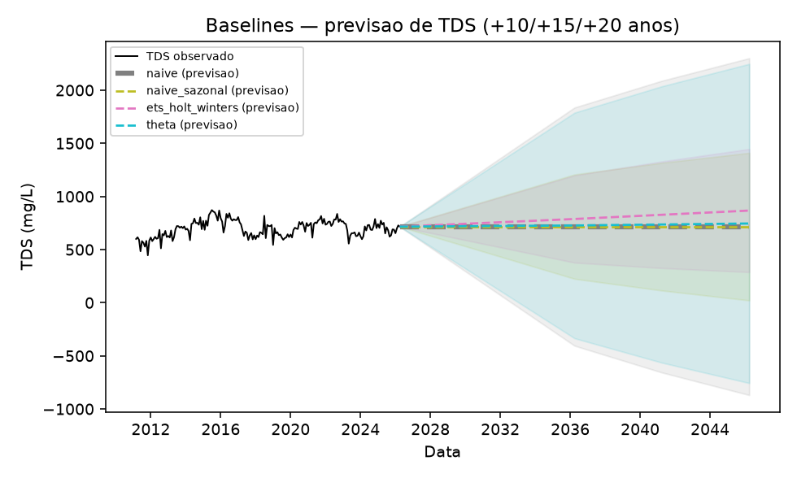

Dez métodos, um padrão claro — e um baseline que vence todos
Objetivo desta lição: entender por que a bateria de previsão não tem "um modelo vencedor", e sim três grupos de comportamento — e saber defender o achado mais contraintuitivo do artigo: o baseline mais simples de todos tem o menor erro de curto prazo.
1. STL + tendência e SARIMA — os dois métodos de série temporal clássica

Figura do artigo (resultados.tex, linha 61): "Decomposição STL da série de TDS e previsão por STL+tendência linear e SARIMA, com incerteza para +10/+15/+20 anos."
Como ler — padrão que vale para quase todos os gráficos desta lição:
Painel superior (quando houver): a decomposição STL em si (tendência suave + sazonalidade), já vista na Lição 0002.
Painel inferior: a série observada (à esquerda) seguida de duas ou mais extrapolações (à direita) com sua banda de incerteza (IC90%) alargando com o horizonte.
O que procurar sempre: (a) a inclinação da reta/curva extrapolada — é o número da tabela de tendência; (b) a largura da banda de incerteza nos horizontes mais longos — quanto mais larga, menos o modelo "confia" na própria extrapolação.
Achado específico aqui: STL+tendência (2,92 mg/L/ano) fica na mesma faixa dos métodos clássicos da Lição 0002. O SARIMA amplifica a tendência para 10,43 mg/L/ano — quase 3x mais — porque sua melhor ordem por AIC (Akaike Information Criterion, critério que equilibra qualidade de ajuste e simplicidade do modelo) não inclui um termo de drift explícito; a tendência de longo prazo emerge indiretamente da diferenciação sazonal dupla, um mecanismo totalmente diferente de "ajustar uma reta". O IC90% do SARIMA cresce tão rápido que já inclui valores negativos de TDS em +15 anos (-94,3 mg/L) — o próprio modelo sinalizando que está extrapolando demais, não um bug.
🔧 Como funciona: SARIMA
SARIMA (Seasonal ARIMA)
Combina AR (regride no próprio passado), I (diferenciação, pra tornar a série estacionária) e MA (regride no erro de previsão dos passos anteriores), com versões sazonais de cada um. A ordem (p,d,q)(P,D,Q) é escolhida pelo menor AIC numa grade de combinações — aqui, sem termo de drift, a tendência emerge da diferenciação sazonal dupla, não de uma reta.
2. Random Forest, XGBoost e LightGBM — os três métodos de árvore

Figura do artigo (resultados.tex, linha 87): "Previsão recursiva de TDS por Random Forest (+10/+15/+20 anos), com intervalo empírico de dispersão entre as árvores da floresta."

Figura do artigo (resultados.tex, linha 98): "Previsão recursiva de TDS por XGBoost (GPU/CUDA) e LightGBM (CPU), com IC90% por regressão quantílica."
Como ler — e a limitação estrutural que os três compartilham:
1. "Recursiva" quer dizer: o valor previsto de um mês se torna o lag (entrada) do mês seguinte. É assim que um modelo de árvore, que normalmente só prevê 1 passo, consegue prever 10-20 anos adiante.
2.O que procurar no Random Forest: a linha prevista "satura" — os três horizontes (+10, +15, +20 anos) convergem para o mesmo valor, 704,3 mg/L. Isso não é coincidência nem erro: árvores de decisão não conseguem prever valores fora do intervalo visto no treino, então a previsão recursiva simplesmente para de subir.
3. O que procurar no XGBoost: a previsão não é nem monotonicamente estável — 649,6 mg/L em +10 anos e também em +20 anos, mas 717,6 mg/L em +15 anos (sobe e desce). É um artefato de como o boosting de árvores rasas reage a features recursivas fora do range de treino.
4. O número que resume os três: a tendência implícita nos primeiros 10 anos da previsão recursiva é negativa para os três (-0,25 a -0,91 mg/L/ano) — o oposto da tendência real, positiva e significativa (3,7-3,9 mg/L/ano). Isto não é um defeito de implementação — é a limitação estrutural conhecida de modelos de árvore para extrapolação, reportada explicitamente em vez de escondida.
🔧 Como funcionam: Random Forest, XGBoost e LightGBM
Random Forest — bagging
Treina muitas árvores de decisão, cada uma num reamostra bootstrap diferente dos dados e um subconjunto aleatório de features, e faz a média das previsões — reduz variância.
XGBoost / LightGBM — gradient boosting
Diferente do bagging (árvores independentes), treina árvores sequencialmente, cada nova árvore corrigindo o erro (gradiente) deixado pelas anteriores. LightGBM usa a mesma ideia com uma estratégia de crescimento de árvore diferente (folha-a-folha, por histogramas) — mais rápido em datasets grandes.
Por que a previsão do Random Forest satura no mesmo valor em +10/+15/+20 anos?
3. Prophet e regressão bayesiana — os dois métodos de tendência "adaptativa"

Figura do artigo (resultados.tex, linha 129): "Previsão de TDS por Prophet e regressão bayesiana (PyMC/NUTS), com IC90% para +10/+15/+20 anos."
Como ler — e o achado inesperado do Prophet:
1. Regressão bayesiana: praticamente idêntica à OLS (3,74 mg/L/ano) — faz sentido, é o mesmo modelo linear, só que ajustado por amostragem da posterior (PyMC/NUTS) em vez de máxima verossimilhança. 99,88% de probabilidade posterior da tendência ser positiva.
2.A vantagem real da versão bayesiana não é o ponto central, é o IC: ele cresce de forma suave e proporcional ao horizonte (268,9 mg/L em +10 anos → 279,7 mg/L em +20 anos) — o comportamento "honesto" que motivou incluir este método (é um dos 3 finalistas, Lição 0001).
3. O Prophet detecta a tendência histórica corretamente (3,81 mg/L/ano, p<0,0001) — mas sua extrapolação cai: a componente de tendência vai de 688,7 mg/L (último mês observado) para 634,7 mg/L em +20 anos. Causa: o Prophet detecta automaticamente um changepoint perto do fim da série (uma desaceleração/reversão local recente) e extrapola essa inclinação recente, não a média de 15 anos.
4.Isso é um achado metodológico genuíno, não um erro corrigido: modelos de tendência linear por partes podem discordar fortemente da tendência de longo prazo, mesmo detectando-a corretamente na história.
🔧 Como funcionam: Prophet e regressão bayesiana
Prophet
Modelo aditivo decomponível (tendência + sazonalidade), Meta/Facebook — tendência linear por partes, com changepoints (pontos de mudança de inclinação) detectados automaticamente. Ajustado via inferência bayesiana (Stan) por baixo dos panos.
Regressão bayesiana
O mesmo modelo linear da OLS, mas ajustado por inferência bayesiana (priors + verossimilhança → posterior) via amostragem MCMC (Markov Chain Monte Carlo, família de algoritmos que amostra uma distribuição complexa simulando uma cadeia de passos aleatórios; PyMC/NUTS) em vez de mínimos quadrados — a posterior completa (não um único valor) faz o IC incorporar incerteza do parâmetro e do resíduo juntas.
4. Os 4 baselines obrigatórios — o "piso" de comparação

Figura do artigo (resultados.tex, linha 173): "Baselines obrigatórios — naive, naive sazonal, ETS/Holt-Winters e Theta — com IC90% para +10/+15/+20 anos."
Como ler — e por que baselines "burros" são obrigatórios cientificamente:
1. Naive: prevê o último valor observado, constante, para sempre. Naive sazonal: repete o mesmo mês do ano anterior. ETS/Holt-Winters e Theta: suavização exponencial, com a componente sazonal desligada (porque $F_s=0{,}25$ está abaixo do limiar de sazonalidade relevante, Lição 0002).
2. Por que incluir métodos tão simples: eles servem de "piso" — se um método sofisticado não bate um baseline trivial, isso é um sinal de alerta, não um detalhe menor.
🔧 Como funcionam: naive, naive sazonal, ETS/Holt-Winters, Theta
Naive / naive sazonal
Repete o último valor observado (naive) ou o valor do mesmo mês do ciclo anterior (naive sazonal) — sem nenhum ajuste.
ETS / Holt-Winters
Média ponderada das observações passadas com pesos que decaem exponencialmente; Holt-Winters acrescenta componentes de tendência e sazonalidade suavizadas separadamente.
Theta
Decompõe a série em "linhas theta" (curvatura modificada por um parâmetro θ) e combina uma extrapolação linear com uma versão suavizada da série — simples, mas historicamente forte em competições de previsão.
Fonte: Tabela \ref{tab:sintese} do artigo (resultados.tex, linha 147).
O padrão de 3 frases, para recitar de cabeça:
1. Os 5 métodos estatísticos (ajuste global à série inteira) convergem: 2,9 a 3,9 mg/L/ano, previsão +20a entre 774 e 807 mg/L.
2. Os 3 métodos de árvore falham estruturalmente: tendência implícita até negativa, por não extrapolarem além do treino.
3. Os 2 métodos adaptativos (SARIMA, Prophet) divergem em direções opostas: um amplifica, o outro reverte.
Conclusão do artigo (não minha): "a evidência mais robusta é a convergência dos métodos estatísticos em torno de 3-4 mg/L/ano — não a previsão pontual de um único modelo para +20 anos."
O achado mais contraintuitivo: o baseline naive ganha de todo mundo
Método
MASE (holdout 24m)
MASE (CV 5 folds)
Naive
0,44
0,76
STL + tendência
0,49
1,00
XGBoost
0,50
0,80
SARIMA
0,50
1,07
Regressão bayesiana
0,52
0,98
Mann-Kendall/Sen
0,53
1,08
Naive sazonal
0,93
0,87
Fonte: Tabela \ref{tab:mase-completo} do artigo (resultados.tex, linha 184) — MASE: erro absoluto médio, escalado pelo erro de um baseline naive de referência; abaixo de 1,0 = melhor que o naive de referência.
A resposta correta de banca para "se o naive ganha, por que vocês usam os outros métodos?":
1. O naive extrapola como reta constante (repete o último valor) — não captura tendência de longo prazo nenhuma.
2. Em um horizonte curto (24 meses de holdout), as flutuações de curto prazo da série pesam mais no erro médio do que o ganho de modelar a tendência corretamente — por isso o naive "vence" nesse recorte específico.
3. Na CV expansiva (janelas de treino menores, mais instável), o naive já não é mais o melhor (MASE 0,76, atrás de XGBoost/LightGBM/RF/Theta) — mostrando que nenhum método único domina em todos os critérios.
4.MASE de holdout curto mede acurácia de curto prazo, não capacidade de captar a direção de longo prazo — que é o objetivo real do projeto (detectar e caracterizar a tendência, não fazer previsão operacional de 2 anos). É por isso que a decisão de finalistas (Lição 0006) pesa MASE, captação de tendência E comportamento do IC — não um único número.
Por que o naive tem o menor MASE no holdout, apesar de não captar nenhuma tendência?
Recall sem olhar: os 3 grupos de comportamento e um método de cada.
Estatístico (convergem, 2,9-3,9 mg/L/ano): ex. Mann-Kendall/Sen, OLS, regressão bayesiana. Árvore (falham estruturalmente, tendência até negativa): Random Forest, XGBoost, LightGBM. Adaptativo (divergem em direções opostas): SARIMA (amplifica, 10,43) e Prophet (reverte na extrapolação). + o baseline naive vence todos em MASE de holdout curto, mas por não captar nenhuma tendência — uma lição sobre a diferença entre "menor erro de curto prazo" e "captar a direção certa de longo prazo".
Ficou alguma dúvida? Pergunte ao agente (Claude Code) agora — ele pode explicar por que SARIMA e Prophet reagem de formas opostas apesar de ambos terem componente de tendência "local", detalhar como a regressão quantílica gera o IC90% do XGBoost/LightGBM, ou simular a pergunta "por que incluir métodos que claramente não funcionam, como as árvores?".